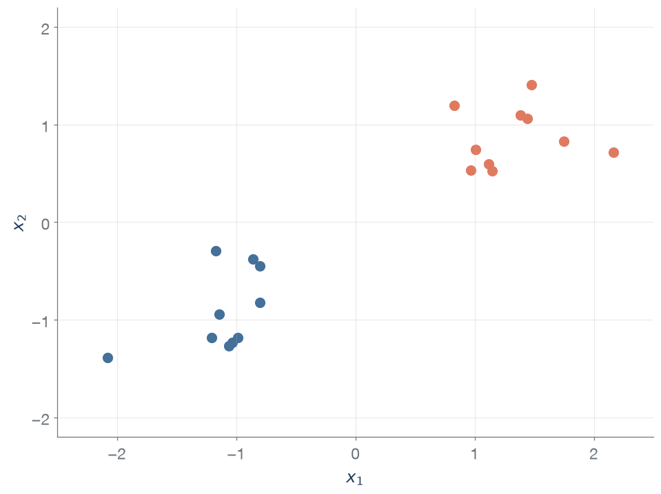
Tema 5. Máquinas de vectores de soporte
Técnicas Avanzadas de Predicción en Negocios
Prof. Juan D. Montoro-Pons | 2026/27
¿Qué recta separa mejor las dos clases?
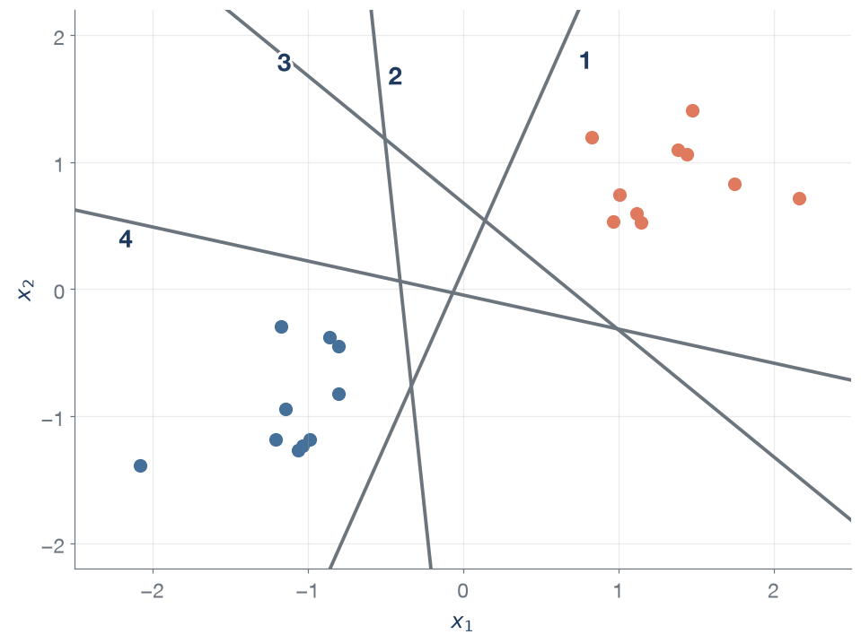
- Dos clases, azul y naranja, y dos predictores.
- Las cuatro rectas grises, numeradas, separan las clases sin ningún error.
- ¿Cuál se elegiría para clasificar observaciones nuevas?
- La 3: deja más espacio entre las dos clases (1,16, frente a 0,85-1,08 de las otras).
- Una observación nueva algo apartada de las de su clase sigue en su lado.
- La SVC busca, entre todas las rectas posibles, la que más espacio deja.
Ejemplo construido: 20 observaciones simuladas, 10 de cada clase (semilla 42).
Tres preguntas
Las máquinas de vectores de soporte (SVM) separan dos clases con la frontera que deja más espacio entre ellas, admitiendo errores cuando las clases se mezclan, y esa frontera la fijan las observaciones cercanas a ella o en el lado equivocado, los vectores de soporte. La misma idea predice valores numéricos: en clasificación se llaman SVC y en regresión, SVR.
- ¿Qué frontera elige una SVC para separar dos clases? La recta que deja más espacio a las dos clases, aunque algunas observaciones queden en el lado equivocado cuando las clases se mezclan.
- ¿Cómo separa una SVM clases que una recta no separa? Crea columnas nuevas a partir de los predictores, con las que una frontera plana separa las clases, y vista con los predictores originales esa frontera es curva.
- ¿Qué cambia cuando una SVM predice un valor numérico? Rodea la predicción de una franja de tolerancia, de modo que los errores dentro de ella no cuentan y la predicción la deciden las observaciones que quedan fuera.
¿Qué frontera elige una SVC para separar dos clases?
Cada recta que separa deja un margen
El margen de una recta que separa dos clases es la banda vacía a su alrededor, hasta la observación más cercana de cada clase.
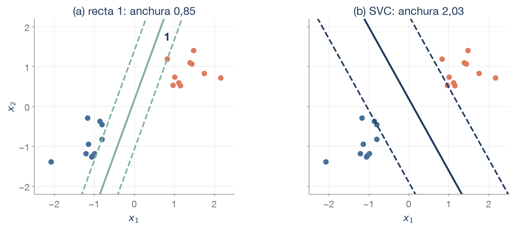
La SVC elige, de todas las rectas que separan, la que deja el margen más ancho.
La puntuación \(f(x)\) fija la frontera y el margen
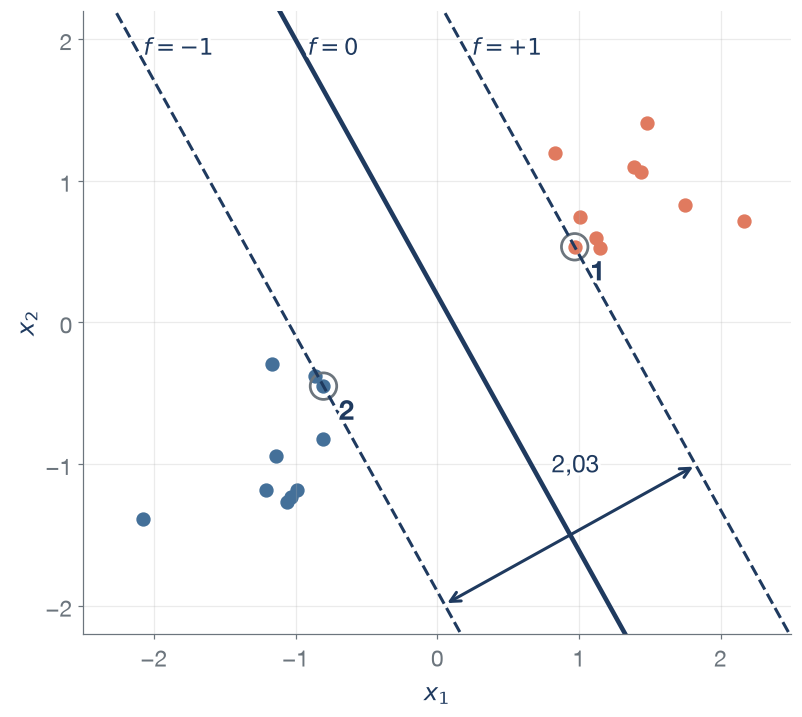
- La SVC calcula una puntuación para cada observación, \(f(x) = \beta_0 + \beta_1 x_1 + \beta_2 x_2\), con los coeficientes que elige al ajustar. La clase es naranja si \(f(x) > 0\), y la frontera es \(f(x) = 0\).
- Multiplicar todos los coeficientes por un mismo número no mueve la frontera. La SVC elige ese número para que las observaciones más cercanas a la frontera tengan puntuación \(-1\) o \(+1\), y los bordes del margen son \(f(x) = \pm1\).
- Esas observaciones, sobre los bordes (círculos, 2 de 20), son los vectores de soporte.
Solo los vectores de soporte fijan la frontera
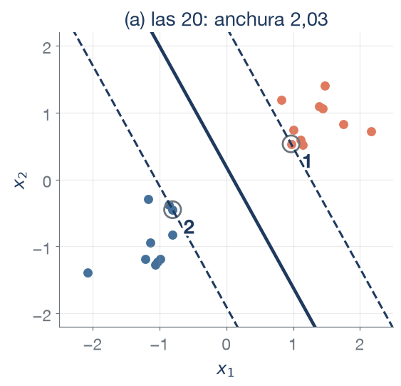
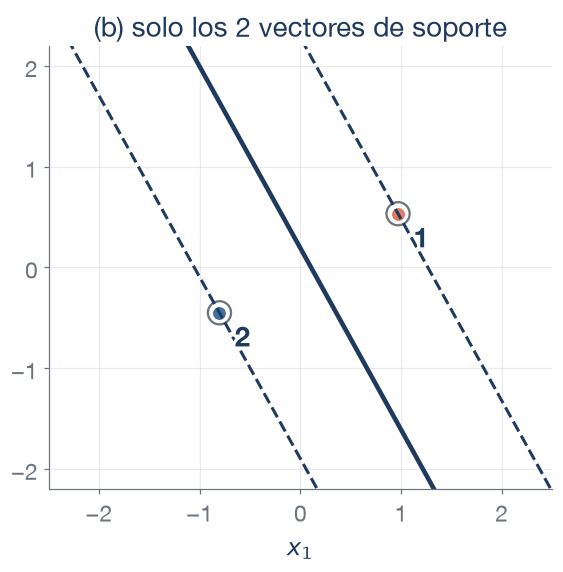
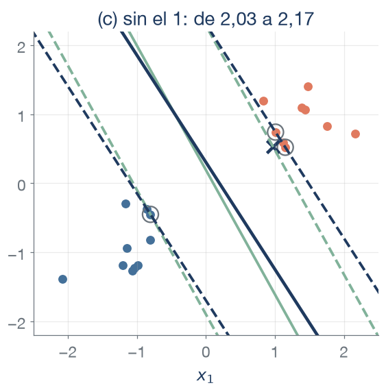
El mismo ejemplo construido (círculos: vectores de soporte). En (c), la × marca la observación que se quita. En verde, la frontera y el margen anteriores, y en azul oscuro, los nuevos.
Una observación nueva se clasifica por el signo de \(f(x)\)
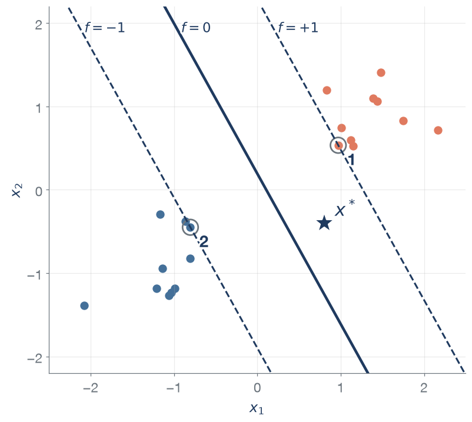
Coeficientes estimados por la SVC y una observación nueva \(x^*\):
| \(\beta_0\) | \(\beta_1\) | \(\beta_2\) | \(x^*_1\) | \(x^*_2\) |
|---|---|---|---|---|
| −0,09 | 0,86 | 0,48 | 0,8 | −0,4 |
¿Qué puntuación tiene \(x^*\)? ¿Qué clase predice la SVC? ¿Está dentro del margen?
| \(\beta_0\) | \(\beta_1 x^*_1\) | \(\beta_2 x^*_2\) | \(f(x^*)\) |
|---|---|---|---|
| −0,09 | 0,69 | −0,19 | 0,41 |
- Positiva: clase naranja. Como queda entre 0 y 1, \(x^*\) está dentro del margen.
- La SVC elige los coeficientes al ajustar, con las observaciones de entrenamiento, y después calcula \(f\) en cada observación nueva con esos coeficientes.
Margen duro y margen blando
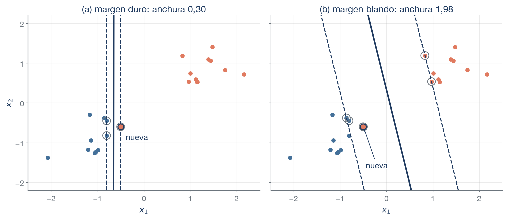
El ejemplo construido con una observación naranja más (borde oscuro). Sin ella, el margen era de 2,03. (a) El margen duro no admite ninguna observación dentro ni en el lado equivocado, y una sola observación lo estrecha y mueve la frontera. (b) El margen blando admite la observación en el lado equivocado a cambio de un coste y conserva un margen ancho.
Las clases se solapan con datos reales
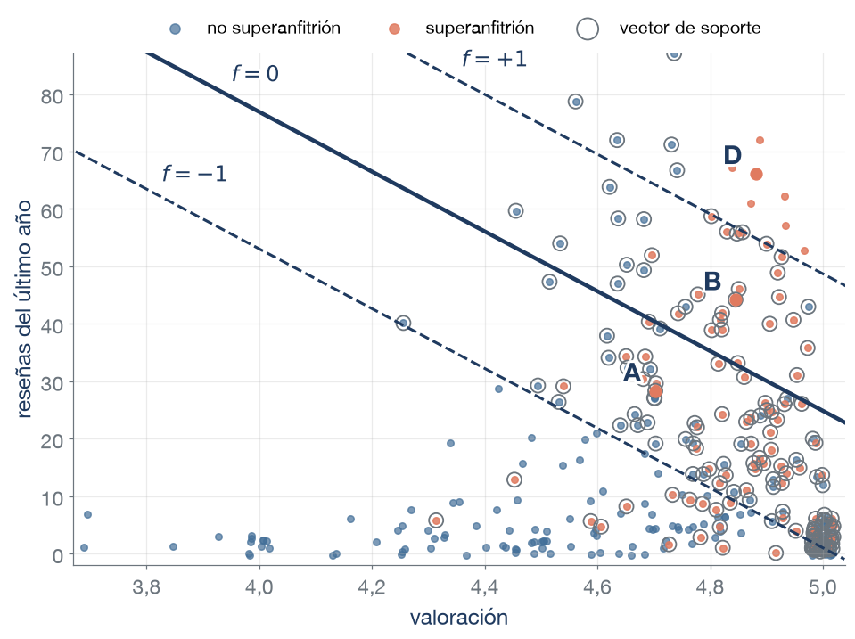
- ¿Es el anfitrión superanfitrión? Con la valoración y las reseñas, ninguna banda deja a todos los anuncios en su lado: la SVC usa un margen blando.
- La puntuación \(f(x)\) combina la valoración y las reseñas estandarizadas. La frontera es la recta donde \(f\) vale 0, y los bordes, donde vale −1 y +1.
- Con margen blando, los vectores de soporte son las observaciones dentro del margen, en su borde o en el lado equivocado (círculos): 176 de 300.
- A está en el lado equivocado, B dentro del margen y D fuera de él, en su lado.
Fuente: Inside Airbnb, Valencia (listados.csv). 300 anuncios de entrenamiento con valoración, elegidos al azar. SVC lineal con los dos predictores estandarizados. Puntos desplazados al azar una cantidad pequeña para que no se tapen.
La pérdida bisagra
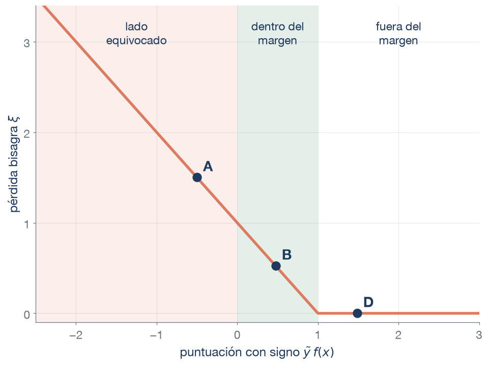
\(\tilde y_i = +1\) (superanfitrión) o \(-1\). \(f(x_i)\) es la puntuación de la observación \(i\) con los coeficientes del ajuste, y \(\tilde y_i f(x_i)\) es positiva si la observación está en el lado de su clase.
Pérdida bisagra (hinge):
\[\xi_i = \max(0,\ 1 - \tilde y_i\, f(x_i))\]
Vale 0 fuera del margen en su lado, entre 0 y 1 dentro del margen, 1 sobre la frontera y más de 1 en el lado equivocado.
| Caso | Clase \(\tilde y\) | Puntuación \(f(x)\) |
|---|---|---|
| 1 | +1 | −0,5 |
| 2 | +1 | 0,5 |
| 3 | +1 | 1,5 |
| 4 | −1 | −0,5 |
| 5 | +1 | 1,0 |
¿Cuáles están bien clasificados? ¿Qué pérdida tiene cada uno?
| Caso | \(\tilde y\) | \(f(x)\) | \(\tilde y\, f(x)\) | Lado | \(\xi\) |
|---|---|---|---|---|---|
| 1 | +1 | −0,5 | −0,5 | no | 1,5 |
| 2 | +1 | 0,5 | 0,5 | sí | 0,5 |
| 3 | +1 | 1,5 | 1,5 | sí | 0 |
| 4 | −1 | −0,5 | 0,5 | sí | 0,5 |
| 5 | +1 | 1,0 | 1,0 | sí | 0 |
- Los casos 2 y 4 están en su lado, dentro del margen, y su pérdida influye en la frontera.
- El caso 5 tiene pérdida 0 y es vector de soporte: está en el borde del margen.
El coste de las pérdidas fija la anchura del margen
La SVC elige los coeficientes \(\beta_0, \beta_1, \beta_2\) que minimizan
\[\tfrac12(\beta_1^2 + \beta_2^2) + {\color{#E07A5F}C}\sum_i \max(0,\ 1 - \tilde y_i f(x_i))\]
Coeficientes pequeños (un margen ancho) frente a la suma de las pérdidas bisagra. \({\color{#E07A5F}C} > 0\) es el coste de cada unidad de pérdida, un hiperparámetro que fijamos antes de ajustar.
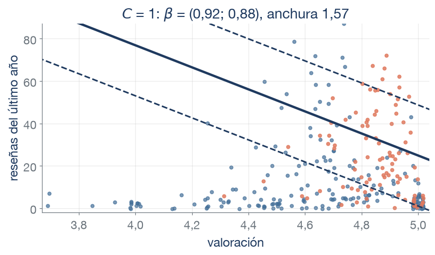
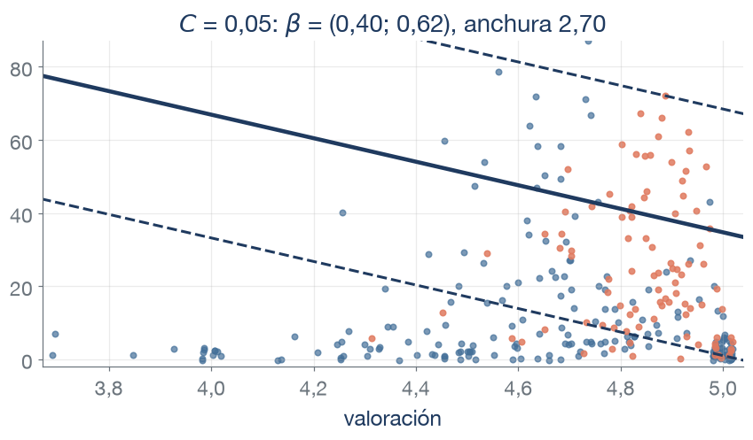
\(\beta\): coeficientes de la valoración y de las reseñas estandarizadas. Con \(C\) pequeño, las observaciones dentro del margen salen baratas: la SVC encoge los coeficientes y el margen se ensancha.
¿Cómo separa una SVM clases que una recta no separa?
Ninguna recta separa estas clases
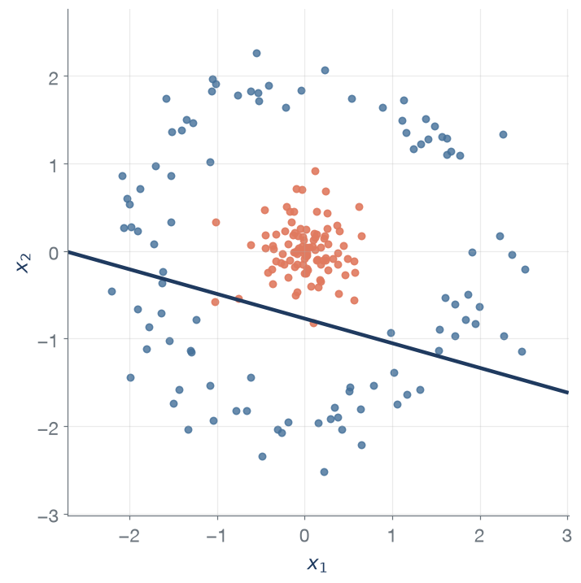
- La SVC lineal acierta el 68 % de estas observaciones, con el 50 % del clasificador nulo.
- ¿Qué columna nueva, calculada con \(x_1\) y \(x_2\), permitiría separarlas con un plano?
La distancia al centro, o su cuadrado, \(x_1^2 + x_2^2\):
| Observación | \(x_1\) | \(x_2\) | \(x_1^2 + x_2^2\) |
|---|---|---|---|
| del centro | 0,26 | 0,26 | 0,13 |
| del anillo | 1,32 | −1,58 | 4,25 |
- Es pequeña en el centro y grande en el anillo: un umbral en esa columna las separa.
Ejemplo construido: 200 observaciones simuladas (semilla 42), 100 en el centro con radio \(\lvert N(0;\ 0{,}55)\rvert\) y 100 en un anillo con radio \(N(2;\ 0{,}25)\), con ángulos al azar. Acierto en las 200 observaciones de ajuste.
Una columna nueva permite separarlas con un plano
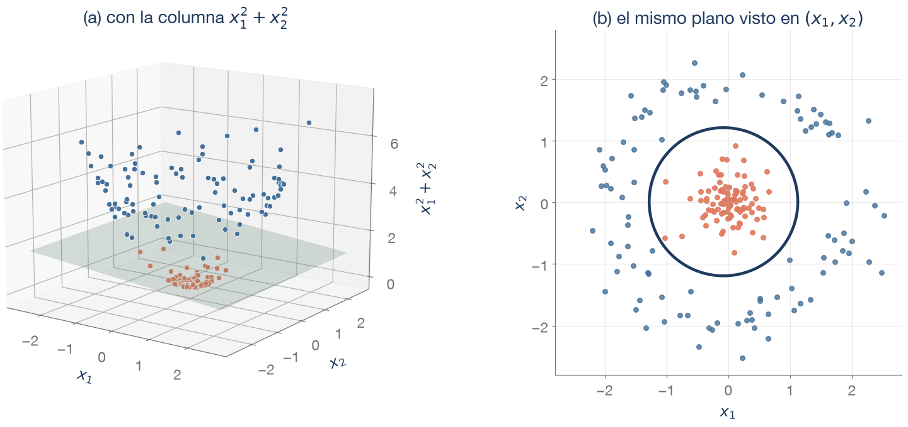
Las mismas 200 observaciones con una tercera columna, \(x_1^2 + x_2^2\). (a) La SVC lineal con las tres columnas las separa con un plano: acierta el 100 % con 5 vectores de soporte. (b) En los predictores originales, ese plano es un círculo.
Con muchos predictores las columnas nuevas se multiplican
| Predictores | Columnas hasta grado 2 | Columnas hasta grado 3 |
|---|---|---|
| 2 | 5 | 9 |
| 10 | 65 | 285 |
| 46 | 1127 | 18 423 |
- Con dos predictores bastó una columna, \(x_1^2 + x_2^2\).
- Con muchos predictores, las columnas hasta grado 2 y 3 se multiplican: con 46 predictores son 1127 y 18 423.
- Como no se sabe de antemano cuáles sirven, habría que construirlas todas, y el tamaño de los datos y el tiempo de ajuste crecen con ellas.
- ¿Qué información de esas columnas necesita la SVC para ajustar la frontera?
El problema dual solo necesita productos entre observaciones
La SVC puede encontrar la frontera ajustando un peso por observación. Esta forma de resolver el mismo compromiso entre margen y pérdidas se llama problema dual.
Qué se estima
- \(\alpha_i\): multiplicador de Lagrange de la observación \(i\), la magnitud de su peso, entre 0 y \(C\).
- \(\tilde y_i\): su clase, \(+1\) o \(-1\). El peso con signo es \(v_i = \tilde y_i\alpha_i\).
- Los vectores de soporte son las observaciones con peso distinto de cero.
- Los coeficientes salen de los pesos: \(\beta_j = \sum_i v_i x_{ij}\).
El producto escalar resume un par de observaciones: multiplica los valores de cada columna y los suma.
\[\langle x_i,x_l\rangle = \sum_{j=1}^{p} x_{ij}x_{lj}\]
\(x_i\) y \(x_l\): dos observaciones con \(p\) columnas. \(x_{ij}\): valor de la columna \(j\) en la observación \(i\).
\[\max_{\alpha}\; \sum_i\alpha_i - \frac12\sum_i\sum_l \alpha_i\alpha_l\tilde y_i\tilde y_l\,{\color{#E07A5F}\langle x_i,x_l\rangle} \qquad 0\leq\alpha_i\leq C,\quad \sum_i\alpha_i\tilde y_i=0\]
Los índices \(i\) y \(l\) recorren las observaciones de entrenamiento. Los predictores solo entran por los productos escalares, en naranja.
El núcleo evita construir las columnas transformadas
Al añadir columnas, el dual necesita los productos escalares de las observaciones transformadas. Un núcleo calcula esos productos directamente con los predictores originales.
\(\Phi(x)\) representa las columnas transformadas de la observación \(x\). En el ejemplo de los anillos:
\[\Phi(x)=(x_1,\ x_2,\ x_1^2+x_2^2)\]
Truco del núcleo
Para dos observaciones \(x_i\) y \(x_l\):
\[k(x_i,x_l)=\langle\Phi(x_i),\Phi(x_l)\rangle\]
La función \(k\) obtiene el mismo número sin construir \(\Phi(x_i)\) ni \(\Phi(x_l)\).
- Al ajustar, cada producto escalar del dual se sustituye por \(k(x_i,x_l)\), y con él se estiman los pesos.
- Al predecir una observación nueva \(x\), la puntuación con los pesos, \(\beta_0+\sum_{i\in\mathrm{VS}} v_i\langle x_i,x\rangle\), pasa a ser
\[f(x)=\beta_0+\sum_{i\in\mathrm{VS}} v_i\,k(x_i,x)\]
\(\beta_0\): la constante de la puntuación lineal. \(v_i\): peso del vector de soporte (VS) \(x_i\). El signo de \(f(x)\) da la clase.
El truco del núcleo con dos observaciones
Dos observaciones, \(A = (1, 0)\) y \(B = (0, 2)\).
La transformación, con \(\Phi(x) = (x_1, x_2, x_1^2 + x_2^2)\):
- Paso a 3D: \[\Phi(A) = (1, 0, 1^2 + 0^2) = (1, 0, 1)\] \[\Phi(B) = (0, 2, 0^2 + 2^2) = (0, 2, 4)\]
- Producto escalar: \[\Phi(A)\cdot\Phi(B) = 1\cdot 0 + 0\cdot 2 + 1\cdot 4 = 4\]
El truco, con los predictores originales:
- Núcleo: \[k(A, B) = a_1b_1 + a_2b_2 + (a_1^2 + a_2^2)(b_1^2 + b_2^2)\]
- Sustituimos: \[k(A, B) = 1\cdot 0 + 0\cdot 2 + (1^2 + 0^2)(0^2 + 2^2) = 4\]
Resultado: \(k(A, B) = \Phi(A)\cdot\Phi(B)\) sin transformar los predictores.
El núcleo RBF sustituye a columnas de todos los grados
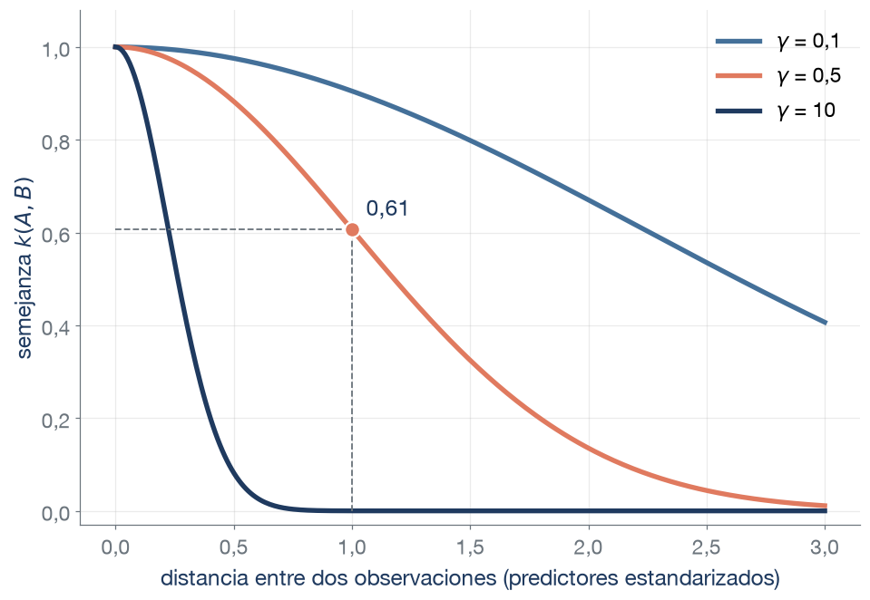
- El núcleo RBF mide la semejanza de dos observaciones por su distancia: \(k(A, B) = e^{-\gamma\lVert A - B\rVert^2}\). Vale 1 si son iguales y baja hacia 0 al alejarse.
- Frente a construir columnas, el RBF:
- Equivale a una transformación con infinitas columnas que incluye términos de todos los grados, sin construirlas.
- Permite fronteras de casi cualquier forma.
- No obliga a elegir qué columnas añadir.
- Tiene un solo hiperparámetro, \(\gamma\), que fija el alcance de la semejanza. Con \(C\), controla la complejidad.
Para clasificar \(x^*\) se suman las contribuciones
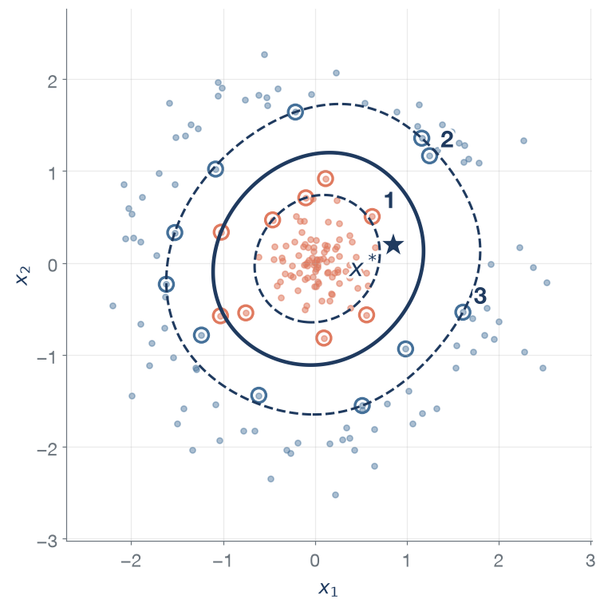
\(f(x^*) = \beta_0 + \sum_{i\in\text{VS}} v_i\, k(x_i, x^*)\), con la semejanza RBF:
| Peso | Semejanza con \(x^*\) | Contribución | |
|---|---|---|---|
| Vector de soporte 1 (naranja) | +1 | 0,93 | |
| Vector de soporte 2 (azul) | −1 | 0,58 | |
| Vector de soporte 3 (azul) | −0,25 | 0,57 | |
| Otros 17 | 1,59 | ||
| Constante \(\beta_0\) | −1,10 |
¿Qué signo tiene la puntuación en \(x^*\)? ¿Qué clase predice la SVC?
| Peso | Semejanza con \(x^*\) | Contribución | |
|---|---|---|---|
| Vector de soporte 1 (naranja) | +1 | 0,93 | 0,93 |
| Vector de soporte 2 (azul) | −1 | 0,58 | −0,58 |
| Vector de soporte 3 (azul) | −0,25 | 0,57 | −0,14 |
| Otros 17 | 1,59 | ||
| Constante \(\beta_0\) | −1,10 | ||
| Puntuación | 0,70 |
Positiva: clase naranja. Los pesos se aprendieron al ajustar, y no todos valen ±1.
SVC con núcleo RBF (\(\gamma\) = 0,5, \(C\) = 1) en los anillos: 20 vectores de soporte (círculos naranjas con peso positivo y azules con peso negativo).
\(\gamma\) fija cuánto se curva la frontera
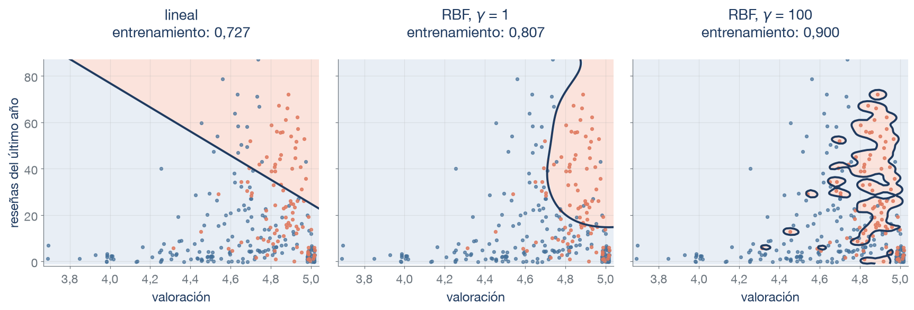
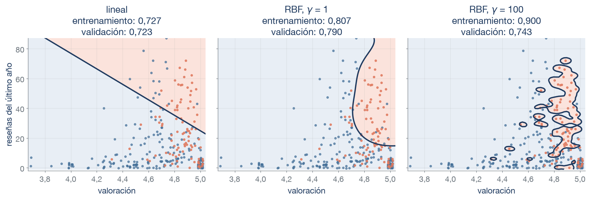
\(C\) = 1 y los predictores estandarizados. Título: exactitud del modelo dibujado en los 300 anuncios con los que se ajusta. ¿Cuál clasificará mejor anuncios nuevos?
Exactitud de validación cruzada, media de 5 particiones estratificadas, con 0,677 del clasificador nulo. Con \(\gamma\) = 100, la frontera rodea anuncios concretos y sobreajusta.
Escalar antes de medir distancias
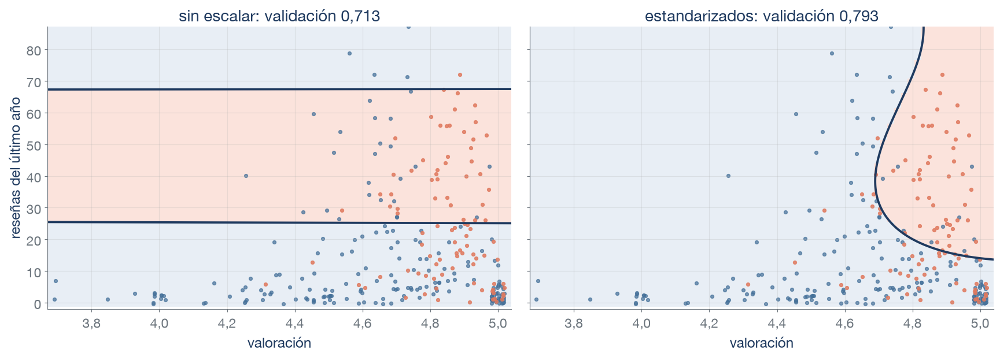
SVC con núcleo RBF, \(C\) = 1 y gamma="scale", que toma un valor distinto con y sin estandarizar. Exactitud de validación cruzada, media de 5 particiones. Sin escalar, las reseñas (desviación típica 21) dominan la distancia frente a la valoración (0,42), y la frontera solo mira las reseñas.
¿Qué cambia cuando una SVM predice un valor numérico?
¿Qué anuncios deberían mover la recta?
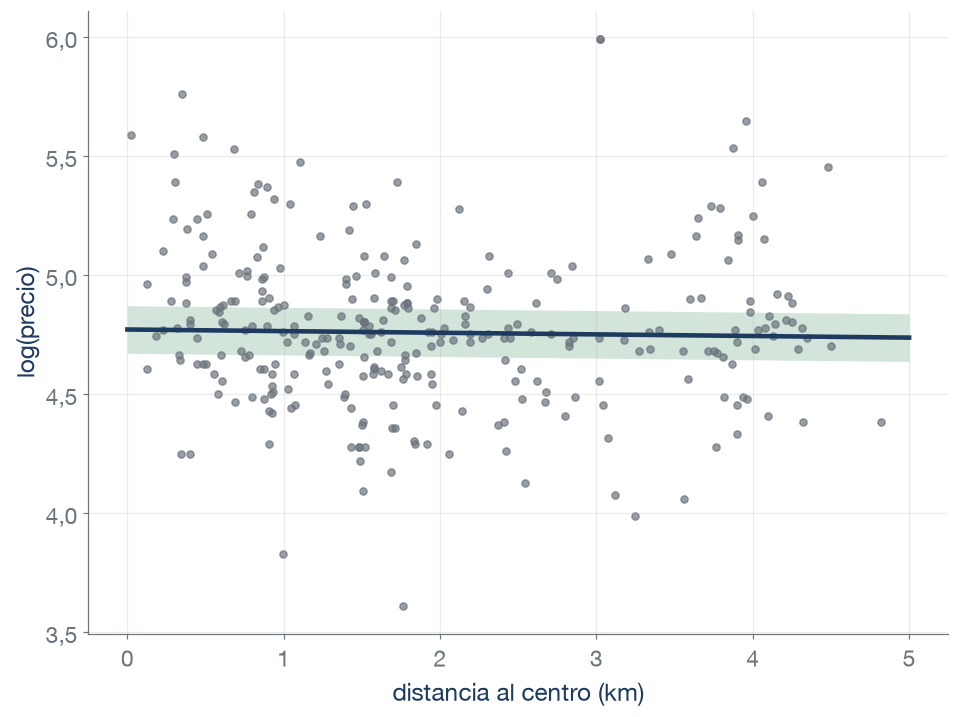
- Una herramienta propone el precio anunciado de una vivienda entera de 4 plazas según su distancia al centro.
- Se acepta un error de aproximadamente ±10 %: la banda verde es una tolerancia elegida de ±0,1 en log(precio).
- ¿Qué anuncios deberían influir en la recta?
- Los que quedan fuera de la banda: un error dentro de la tolerancia no tiene coste.
- En estos 300 anuncios, el 32 % queda dentro de la banda y no influye en la recta. La banda es la tolerancia elegida al plantear el problema, y no dice qué proporción de anuncios nuevos caerá dentro de ella.
- Un ajuste por mínimos cuadrados usa todos los errores, también los pequeños.
Fuente: Inside Airbnb, Valencia (listados.csv). Misma población y división que los temas 2 a 4: 5324 anuncios de entrenamiento, de los que 1606 son viviendas enteras de 4 plazas a menos de 5 km del centro.
La pérdida fuera del tubo
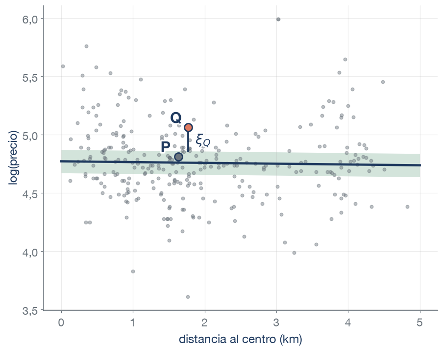
- La SVR lineal ajusta \(f(x) = \beta_0 + \beta_1 x\), cuyo valor es la predicción (la recta), y la rodea de un tubo de semianchura \(\varepsilon\) = 0,1.
- Pérdida insensible a \(\varepsilon\): \(\xi_i = \max(0,\ \lvert y_i - f(x_i)\rvert - \varepsilon)\), lo que el residuo pasa del borde del tubo. Dentro del tubo no cuesta nada.
- \(\varepsilon\) se mide en las unidades de la respuesta: en log(precio), 0,1 es un ±10 % del precio, aproximadamente. Se fija como tolerancia del problema o por validación cruzada, y la respuesta no necesita estandarizarse.
| Anuncio | Residuo \(y - f(x)\) | \(\varepsilon\) |
|---|---|---|
| P | 0,05 | 0,1 |
| Q | 0,30 | 0,1 |
¿Qué pérdida tiene cada anuncio?
| Anuncio | Residuo | \(\lvert y - f(x)\rvert - \varepsilon\) | Pérdida \(\xi\) |
|---|---|---|---|
| P | 0,05 | −0,05 | 0 |
| Q | 0,30 | 0,20 | 0,20 |
- P queda dentro del tubo, y Q pasa del borde en 0,20, el segmento \(\xi_Q\) de la figura.
Lo que minimiza la SVR
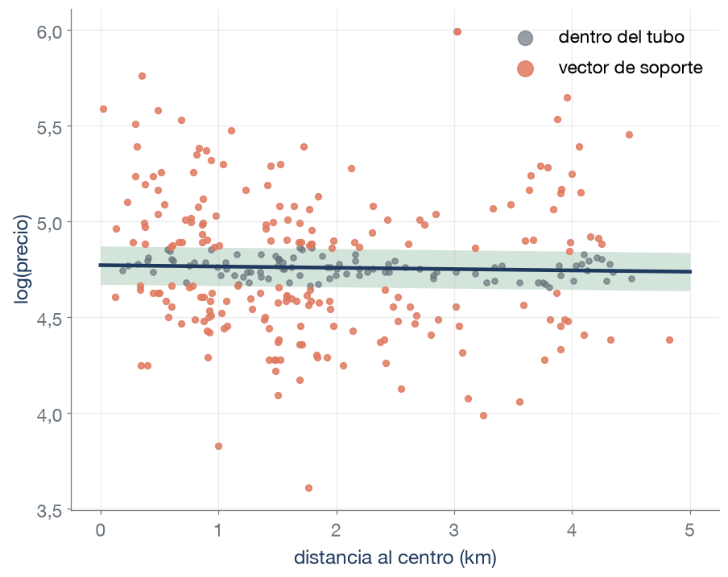
- La SVR minimiza la función de la SVC con la pérdida insensible a \(\varepsilon\) en lugar de la bisagra:
\[\tfrac12\sum_{j=1}^{p}\beta_j^2 + C\sum_i \max(0,\ \lvert y_i - f(x_i)\rvert - \varepsilon)\]
- Los vectores de soporte son las observaciones fuera del tubo o en su borde: 204 de 300.
| Qué controla | Cómo se elige | |
|---|---|---|
| \(\varepsilon\) | Semianchura del tubo | Tolerancia del problema o validación cruzada |
| \(C\) | Coste de una unidad de pérdida | Validación cruzada, antes de ajustar |
| \(\gamma\) | Alcance de la semejanza RBF | Validación cruzada, junto con \(C\) |
SVR lineal con \(\varepsilon\) = 0,1 y \(C\) = 10. El 32 % de los anuncios queda dentro del tubo y no influye en la recta.
\(\gamma\) fija cuánto se curva la función
Con un núcleo, la SVR predice con \(f(x) = \beta_0 + \sum_{i\in\text{VS}} v_i\, k(x_i, x)\), la misma forma que la SVC con núcleo.
![Tres paneles con las 300 viviendas en gris claro, la distancia al centro en horizontal y log(precio) en vertical con el eje ampliado. En cada uno, la recta de la SVR lineal en gris, la media de log(precio) de cada tramo de 0,5 km en rombos azul oscuro, que bajan desde el centro y vuelven a subir, y en naranja la SVR con núcleo RBF. Con gamma 0,05, una curva suave que sigue los rombos; con gamma 1, una curva con más ondulaciones que cae al final; con gamma 20, una curva que oscila entre anuncios concretos.](05_svm_files/figure-revealjs/cell-26-output-1.png)
SVR con núcleo RBF (\(C\) = 10, \(\varepsilon\) = 0,1) y RMSE de validación cruzada en el título. Rombos: media por tramo de 0,5 km. Gris: SVR lineal (RMSE 0,326). Eje vertical ampliado. Con \(\gamma\) = 0,05, la curva propone 141 € por noche en el centro y 109 € a 2 km, y la recta, 118 € y 116 €.
Cambia los tres hiperparámetros de la SVR
Datos: otra selección de 300 viviendas del mismo perfil, tomada de la versión reducida de los datos de la web del curso (incluye los anuncios de test).
\(C\) y \(\gamma\) a la vez
Modelo completo: 5324 anuncios y 46 columnas.
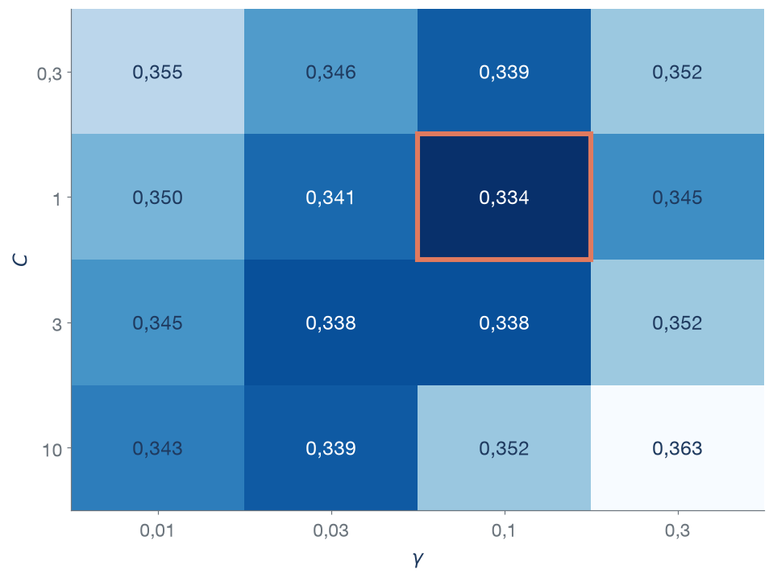
- ¿Qué \(C\) da el menor RMSE en la columna \(\gamma\) = 0,01? ¿Y en la columna \(\gamma\) = 0,3?
- ¿Se elegiría \(C\) sin mirar \(\gamma\)?
- Con \(\gamma\) = 0,01, el RMSE baja al subir \(C\) y el mejor es \(C\) = 10. Con \(\gamma\) = 0,3, el mejor es \(C\) = 1 y el RMSE sube a partir de ahí.
- No. Con \(\gamma\) grande la función ya es flexible, y un \(C\) mayor empeora el RMSE de validación.
- Por eso \(C\) y \(\gamma\) se eligen juntos con
GridSearchCV: el mínimo (recuadro) está en \(C\) = 1 y \(\gamma\) = 0,1.
SVR con núcleo RBF, 5324 anuncios de entrenamiento y 46 columnas (12 numéricas estandarizadas, barrio y tipo), \(\varepsilon\) = 0,1. RMSE de validación cruzada de GridSearchCV, media de 5 particiones.
El tiempo de ajuste crece más rápido que \(n\)
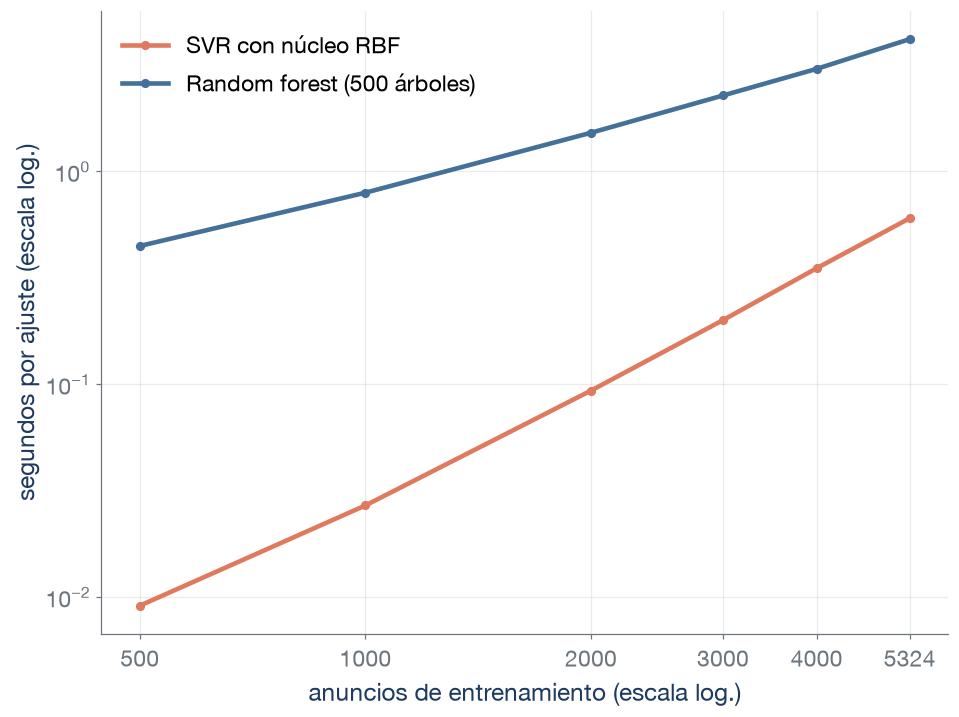
- Con 10,6 veces más anuncios, la SVR tarda 66 veces más (el random forest, 9 veces).
- Con esta implementación (
SVR), el coste del ajuste con núcleo crece entre \(n^2\) y \(n^3\): con cientos de miles de observaciones deja de ser práctico. - Salidas: SVR con núcleo sobre una submuestra, SVM lineal (
LinearSVR,LinearSVC) o un núcleo aproximado (Nystroem) con un modelo lineal.
Un ajuste por tamaño, con un núcleo de CPU, en este equipo, sin búsqueda de hiperparámetros ni predicción. Con estos tamaños, la SVR tarda menos que el random forest.
Qué aporta una SVM frente a modelos lineales y árboles
| Lineal y logística | Ensambles de árboles | SVM con núcleo RBF | |
|---|---|---|---|
| Frontera o función de predicción | Recta o hiperplano | Escalones con cortes perpendiculares a un predictor | Suave, con curvas e interacciones |
| Observaciones que fijan la solución | Todas | Todas | Los vectores de soporte |
| Pérdida en regresión | Cuadrática | Cuadrática, la habitual | Insensible a \(\varepsilon\): un residuo dentro del tubo no cuesta |
| Ajuste | Convexo: todo mínimo local es global | Voraz, corte a corte, sin óptimo global garantizado | Convexo con \(C\) y \(\gamma\) fijados |
| Probabilidades en clasificación | Sí, la logística | Sí | No directas: da una puntuación, que se puede calibrar |
| Preprocesado | Estandarizar si hay penalización | Sin escalar | Estandarizar: mide distancias entre observaciones |
| Coste al crecer \(n\) | Bajo | Moderado | Alto: el ajuste crece entre \(n^2\) y \(n^3\), razonable hasta unos miles de observaciones |
Hiperparámetros de la SVM
SVR y SVC (sklearn.svm):
| Hiperparámetro | Qué controla | Efecto |
|---|---|---|
C |
Coste de cada unidad de pérdida (bisagra en la SVC, fuera del tubo en la SVR) | \(C\) mayor, más peso a la pérdida, margen más estrecho y función menos plana. No cambia \(\varepsilon\) |
epsilon (solo SVR) |
Semianchura \(\varepsilon\) del tubo (anchura total \(2\varepsilon\)), en unidades de la respuesta | \(\varepsilon\) mayor, suele haber menos vectores de soporte |
kernel |
Núcleo: "linear" (recta), "poly" (polinomio con interacciones), "rbf" (suma de contribuciones suaves) |
Forma de la función o de la frontera |
gamma |
Con RBF, alcance de la semejanza: \(\gamma\) mayor, alcance más corto (en el polinómico, factor del producto escalar) | Función o frontera más flexible |
degree |
Grado del núcleo polinómico | Grado mayor, más interacciones |
class_weight (solo SVC) |
Multiplica el coste \(C\) de las pérdidas de cada clase | El ajuste tiende a favorecer la clase con más peso |
Valores por defecto: C=1, epsilon=0,1, kernel=“rbf”, gamma=“scale”, degree=3, class_weight=None.
Los predictores numéricos se estandarizan en el Pipeline, antes de la SVM.
Recapitulación: tres respuestas
- ¿Qué frontera elige una SVC para separar dos clases? La que equilibra un margen ancho con las pérdidas bisagra, multiplicadas por \(C\), de las observaciones dentro del margen o en el lado equivocado. Esas observaciones, con las del borde, son los vectores de soporte.
- ¿Cómo separa una SVM clases que una recta no separa? Un núcleo permite ajustar una frontera plana en columnas transformadas sin construirlas, y esa frontera puede ser curva en los predictores originales. La puntuación suma la contribución de cada vector de soporte.
- ¿Qué cambia cuando una SVM predice un valor numérico? Los errores dentro del tubo \(\varepsilon\) no cuestan, la función la fijan las observaciones fuera del tubo o en su borde, y \(C\) y \(\gamma\) se eligen por validación cruzada.
Actividad final: tres comprobaciones
En parejas, 4 min. Cifras ilustrativas.
| Tarea | Datos | Pregunta |
|---|---|---|
| Bisagra | Un anuncio sin superanfitrión (\(\tilde y = -1\)) con puntuación \(f(x)\) = 0,3 | ¿Está bien clasificado? ¿Qué pérdida tiene? |
| Núcleo | \(\beta_0\) = −0,2. Dos vectores de soporte con pesos +0,4 y −1 y semejanzas 0,6 y 0,3 con \(x\) | ¿Qué clase predice la SVC? ¿Qué es cada producto? |
| SVR | \(\varepsilon\) = 0,1 y un residuo de −0,3 | ¿Qué pérdida tiene? Con \(\varepsilon\) fijo se duplica \(C\) y se reajusta: ¿cambia la semianchura del tubo? ¿Puede cambiar la función? |
| Tarea | Respuesta |
|---|---|
| Bisagra | No: \(\tilde y f(x)\) = −0,3, en el lado equivocado. Su pérdida es 1 − (−0,3) = 1,3 |
| Núcleo | \(f(x)\) = −0,2 + 0,4 · 0,6 − 1 · 0,3 = −0,2 + 0,24 − 0,3 = −0,26, negativa: la clase negativa. Cada producto es un peso aprendido por una semejanza |
| SVR | 0,3 − 0,1 = 0,2. La semianchura sigue en \(\varepsilon\), y la función puede cambiar, así que el tubo se desplaza con ella |
SVR frente a árboles y modelos lineales
Se necesita un modelo que proponga precios anunciados para alojamientos comparables. ¿Se propondría la SVR con núcleo RBF? Dar un argumento con la tabla y otro sobre cómo ajusta la SVR.
| Modelo | Hiperparámetros | RMSE | Segundos por ajuste |
|---|---|---|---|
| Modelo nulo (media) | ninguno | 0,533 | 0,00 |
| Regresión lineal | ninguno | 0,368 | 0,01 |
| SVR lineal | \(C\) = 1, \(\varepsilon\) = 0,1 | 0,381 | 1,21 |
| SVR con núcleo RBF | \(C\) = 1, \(\gamma\) = 0,1, \(\varepsilon\) = 0,1 | 0,334 | 0,39 |
| Random forest | 500 árboles, max_features = 0,33 |
0,314 | 3,13 |
| XGBoost | \(\nu\) = 0,02, profundidad 6, 2000 árboles | 0,314 | 0,92 |
RMSE de validación cruzada de log(precio): errores relativos, con más peso a los grandes. \(\varepsilon\) = 0,1 solo fija qué errores cuentan al ajustar las SVR.
Resultados de selección: \(C\) y \(\gamma\) de la SVR RBF se eligieron con estas mismas particiones, y el test reservado no se usa.
- La SVR con núcleo RBF (0,334) mejora a la regresión lineal y a la SVR lineal. Random forest y XGBoost obtienen el menor RMSE (0,314) en esta comparación de configuraciones seleccionadas, y la SVR RBF queda 0,02 por encima.
- Con esta configuración, la SVR lineal (0,381) queda por encima de la regresión lineal (0,368). Las dos son lineales en los predictores, y la SVR cambia la pérdida y penaliza los coeficientes.
- La SVR con núcleo tarda poco con 5324 anuncios y su coste crece mucho más rápido con \(n\): con estos datos, random forest o XGBoost.
Glosario (1/2): margen y pérdidas
| Concepto | Significado | scikit-learn |
|---|---|---|
| SVC | Clasificador que busca una frontera con margen ancho, en compromiso con las pérdidas bisagra de las observaciones dentro del margen o en el lado equivocado | SVC |
| Puntuación \(f(x)\) | Función de decisión de la SVC: lineal en los predictores con núcleo lineal, \(\beta_0 + \sum_{i \in \text{VS}} v_i\, k(x_i, x)\) con un núcleo, con un peso \(v_i\) por vector de soporte. Frontera en \(f(x) = 0\) y clase por el signo. Para una observación nueva, se calcula con lo estimado al ajustar | decision_function (puntuación), predict (clase) |
| Margen | Banda entre \(f(x) = -1\) y \(f(x) = +1\). Con núcleo lineal, su anchura es \(2/\sqrt{\sum_j\beta_j^2}\) en los predictores con que se ajusta. Con un núcleo, se mide en las columnas transformadas | — |
| Vector de soporte | Observación dentro del margen, en su borde o mal clasificada (SVC), o fuera del tubo o en su borde (SVR). Solo ellas definen la solución | support_, support_vectors_ |
| Margen duro | Margen sin ninguna observación dentro ni en el lado equivocado. Solo existe si una recta separa las clases | — |
| Margen blando | Margen que admite observaciones dentro o en el lado equivocado, con un coste: compromiso entre anchura y pérdidas | C |
| Pérdida bisagra | \(\xi_i = \max(0, 1 - \tilde y_i f(x_i))\), con \(\tilde y_i = \pm 1\) (hinge loss): vale cero fuera del margen o en su borde, en el lado correcto | — |
| Coste \(C\) | Peso de las pérdidas frente a la complejidad de la función. Con \(C\) pequeño, coeficientes menores y margen más ancho | C |
Glosario (2/2): núcleos y regresión
| Concepto | Significado | scikit-learn |
|---|---|---|
| Suma de los productos (producto escalar) | \(\langle x_i, x_l\rangle\): suma de los productos de los valores de dos observaciones. Es lo único que el dual usa de los predictores | — |
| Problema dual | Forma de máximo del ajuste de la SVC, con un multiplicador de Lagrange \(\alpha_i\) entre 0 y \(C\) y un peso \(v_i = \tilde y_i\alpha_i\) por observación | dual_coef_ (los \(v_i\)) |
| Núcleo | Calcula con los predictores originales la suma de los productos de las columnas transformadas de dos observaciones | kernel |
| Núcleo RBF | \(e^{-\gamma\lVert x - x'\rVert^2}\): semejanza que vale 1 entre observaciones iguales y baja con la distancia | kernel="rbf" |
| \(\gamma\) | Alcance de la semejanza RBF: \(\gamma\) mayor, alcance más corto y función más flexible | gamma |
| Truco del núcleo | Calcular la suma de los productos de las columnas transformadas de cada par con los predictores originales, sin construir las columnas | — |
| Problema convexo | Problema de ajuste en el que todo mínimo local es global | — |
| SVR | Regresión con pérdida insensible a \(\varepsilon\) y penalización de la complejidad de la función. Su predicción es \(f(x)\) | SVR, predict |
| Tubo \(\varepsilon\) | Banda de semianchura \(\varepsilon\) (anchura total \(2\varepsilon\)) alrededor de la función de la SVR | — |
| Pérdida insensible a \(\varepsilon\) | \(\xi = \max(0, \lvert r\rvert - \varepsilon)\): un residuo menor que \(\varepsilon\) no cuesta nada | epsilon |
| SVM lineal y núcleo aproximado | Implementaciones para muchas observaciones: SVM con función lineal, o columnas que aproximan un núcleo seguidas de un modelo lineal | LinearSVR, LinearSVC, Nystroem |
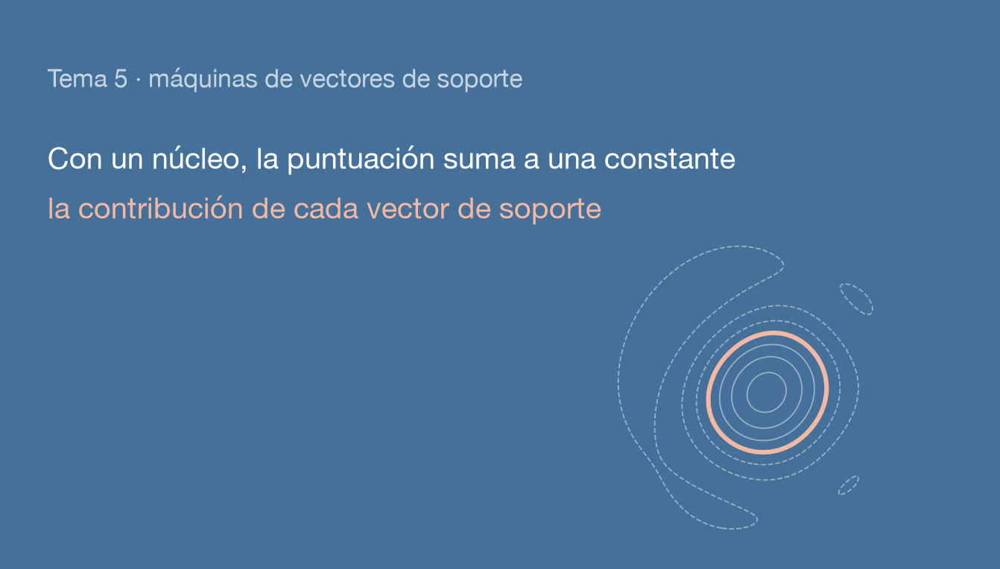